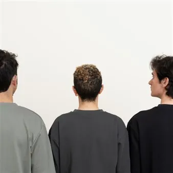

ven 4 set
In\Visible Cities 2026 - Pas moi
In\Visible Cities è un festival urbano e site specific che si svolge “nelle città visibili” , per lo più a cielo aperto: dalle piazze alle strade pedonali, dai parchi pubblici a quelli privati, dagli edifici dal grande valore storico-artistico alle aree dismesse, con l’obiettivo
 Indicazioni
Indicazioni
- Costi e prenotazioni
- Costo non indicato · Prenotazione non indicata
- Programma
- Programma da verificare. Apri la fonte ufficiale per orari e possibili aggiornamenti.
- In caso di maltempo
- Nessuna indicazione specifica pubblicata.
- Note
- Acquisito automaticamente dalla fonte.
L’EVENTO
Descrizione completa
In\Visible Cities è un festival urbano e site specific che si svolge “nelle città visibili” , per lo più a cielo aperto: dalle piazze alle strade pedonali, dai parchi pubblici a quelli privati, dagli edifici dal grande valore storico-artistico alle aree dismesse, con l’obiettivo di valorizzare e far scoprire i territori attraverso esperienze artistiche e performative coinvolgenti. PROGRAMMA
Pas moi / Diana Anselmo sala Bergamas Venerdì 4 settembre ore 19.00
Pas Moi conclude una ricerca documentaria e affettiva che esplora la rete di potere e dominio intessuta nella storiografia tradizionale. Dopo Je Vous Aime, che analizzava le prime proiezioni di immagini in movimento, Pas Moi segue un percorso parallelo e esplora la genesi dei primi dispositivi di registrazione, trasmissione e riproduzione del suono. Attraverso archivi minori, antistorie e saperi situate trasmessi corpo-a-corpo, i celebrati apparecchi all’origine della futura industria cinematografica e musicale si rivelano concepiti con un intento audista e fonocentrico: “guarire” la sordità.
Pas Moi è un dialogo performativo tra due persone Sorde condotto in lingua dei segni, la madre lingua (anche se non risiede nella bocca) di due dei tre artisti sordi in scena.
L'evento è gratuito. Prenotazioni tramite Whatsapp o SMS al numero +39 328 8535125 indicando: Nome, Cognome, Spettacolo, Numero di biglietti. Per informazioni sull’accessibilità: www.invisiblecities.eu/accessibilita
IL PROGRAMMA
Programma e orari
Appuntamenti raccolti dalle fonti elencate. Dove manca un orario, non è ancora disponibile in questa scheda.
Programma pubblicato
- ore 19.00
INFORMAZIONI UTILI
Prima di partire
- Controllare la fonte prima di partire.
ORGANIZZAZIONE